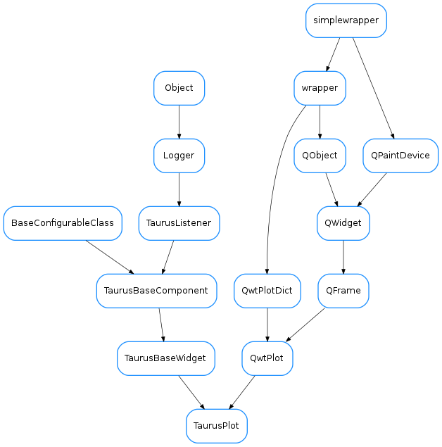
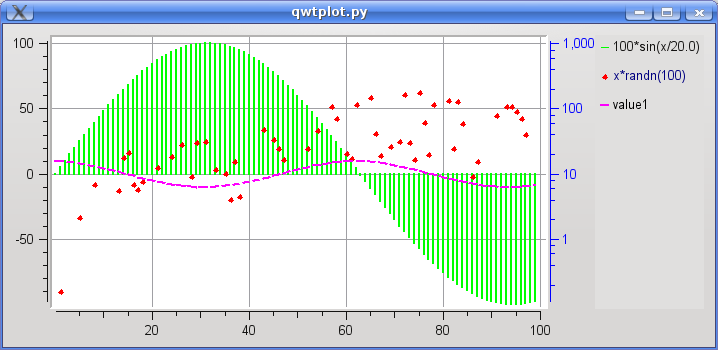

TaurusPlot¶

-
class
TaurusPlot(parent=None, designMode=False)[source]¶ Bases:
PyQt4.Qwt5.Qwt.QwtPlot,taurus.qt.qtgui.base.taurusbase.TaurusBaseWidgetTaurusPlot is a general widget for plotting 1D data sets. It is an extended taurus-aware version of
QwtPlot.TaurusPlot already incorporates by default many features that can be added to a regular QwtPlot:
- Zoomming, panning, and magnifier are enabled by default
- Autoscaling is enabled and associated to the ESC key
- Methods are available to add new curves which can either be associated to taurus attributes or be “raw data” (i.e., values that are not directly aware of control system events)
- Context menu offers access to many options
- A plot configuration dialog, and save/restore configuration facilities
- Date-time scales and linear/log scales support
- Methods for importing/exporting curves from/to ASCII data
- Methods for printing and exporting the plot to PDF
- Methods for creating curves from arbitrary functions
- Data inspection facilities
- ...
For an overview of the features from an user point of view, see the TaurusPlot User’s Interface Guide.
You can also see some code that exemplifies the use of TaurusPlot in the TaurusPlot coding examples
Important: although TaurusPlot subclasses QwtPlot and therefore it is possible to use QwtPlot’s lower level methods for attaching QwtPlotItems (such as QwtPlotCurves) to the plot, it is highly recommended to use the higher-level methods provided by TaurusPlot to interact with the datasets attached to a TaurusPlot (e.g., addModels(), attachRawData()). This is because TaurusPlot keeps records of the items attached via its own methods.
-
CurvesYAxisChanged¶
-
addModels(modelNames)[source]¶ Adds models to the existing ones:
Parameters: modelNames ( sequence<str>) – the names of the models to be added to the plot.See also
setModels(),removeModels()
-
applyAxesConfig(axes)[source]¶ sets the axes according to settings stored in the axes dict, which can be generated with _createAxesDict()
Parameters: axes ( dict) – contains axes properties
-
applyConfig(configdict, **kwargs)[source]¶ implemented as in
TaurusBaseComponent.applyConfig()Parameters: configdict ( dict<str,object>) –See also
createConfig(),TaurusBaseComponent.applyConfig()
-
applyMiscConfig(miscdict)[source]¶ sets the configurations according to settings stored in the misc dict, which can be generated with _createMiscDict()
Parameters: miscdict ( dict) – Dictionary of properties
-
attachRawData(rawdata, properties=None, id=None)[source]¶ attaches a curve to the plot formed from raw data that comes in a dict
Parameters: - rawdata (
dict) –A dictionary defining a rawdata curve. It has the following structure (all keys are optional, but either “y” or “f(x)” must be present. Also, the value of x, y and f(x) can be None):
{“title”:<str>, “x”:list<float>, “y”:list<float>, “f(x)”: <str (an expression to evaluate on the x values)>}
- properties (
CurveAppearanceProperties) – appearance properties for the curve - id (
str) – This will be the internal name identifier used for the curve. If not given, it defaults to the title or to “rawdata” if no title is given.
Return type: QwtPlotCurveReturns: the attached curve
Note: every member of the rawdata dictionary is optional except for the y values (or, alternatively, f(x) AND x)
Note: using “name” in the rawdata dictionary is a still-supported-but-deprecated synonim of “title”.
- rawdata (
-
autoShowYAxes()[source]¶ shows/hides Y1 and Y2 depending of whether there are curves associated to them. Also takes care of changing the zoomer if needed
-
axisScaleDiv(axis)[source]¶ Return the scale division of a specified axis.
Parameters: axis ( Axis) – the axisReturn type: QwtScaleDivReturns: scale division
-
changeCurvesTitlesDialog(curveNamesList=None)[source]¶ Shows a dialog to set the curves titles (it will change the current curves titles and the default curves titles)
Parameters: curveNamesList ( sequence<str> oriterator<str>) – names of the curves to which the title will be changed (if None given , it will apply to all the curves except the raw data ones and it will also be used as default for newly created ones)Return type: caselessDict<str,str>Returns: dictionary with key=curvename and value=newtitle See also
-
checkConfigVersion(configdict, showDialog=False, supportedVersions=None)[source]¶ Check if the version of configdict is supported.
Parameters: - configdict (
dict) – configuration dictionary to check - showDialog (
bool) – whether to show a QtWarning dialog if check failed (false by default) - supportedVersions (
sequence<str> orNone) – supported version numbers, if None given, the versions supported by this widget will be used (i.e., those defined in self._supportedConfigVersions)
Return type: Returns: returns True if the configdict is of the right version
See also
TaurusBaseComponent.checkConfigVersion()- configdict (
-
clearAllRawData()[source]¶ removes all rawdata curves from the plot.
Return type: list<str>Returns: the list of removed curve names
-
contextMenuEvent(event)[source]¶ This function is called when there is context menu event. See
Qwidget.closeEvent()A pop up menu will be shown with the available options. Different parts of the plot (canvas, axes,...) behave differently
-
createConfig(allowUnpickable=False, curvenames=None, **kwargs)[source]¶ Returns a pickable dictionary containing all relevant information about the current plot. Implemented as in
TaurusBaseComponent.createConfig()For Tango attributes it stores the attribute name and the curve properties For raw data curves, it stores the data as well.Hint: The following code allows you to serialize the configuration dictionary as a string (which you can store as a QSetting, or as a Tango Attribute):
import pickle c = pickle.dumps(taurusplot.createConfig()) #c is a string that can be stored
Parameters: curvenames ( sequence<str>) – a sequence of curve names for which the configuration will be stored (all by default).Return type: dictReturns: configurations (which can be loaded with applyConfig) See also
createConfig(),TaurusBaseComponent.createConfig()
-
curveDataChanged(name)[source]¶ slot that is called whenever a curve emits a dataChanged signal
Emits: “dataChanged(const QString &)” Parameters: name ( str) – curve name
-
dataChanged¶
-
defaultCurvesTitle¶ See setDefaultCurvesTitle
-
detachRawData(name)[source]¶ dettaches a raw data curve
Parameters: name ( str) – name (identifier) of the curve to dettach
-
enableOptimization¶ Whether painting optimization is enabled for this plot
Return type: boolReturns:
-
exportAscii(curves=None)[source]¶ Opens a dialog for exporting curves to ASCII files.
Parameters: curves ( sequence<str>) – the curves curves that will be exportable. if None given, all curves are offered for export.
-
exportPdf(fileName=None)[source]¶ Export the plot to a PDF. slot for the _exportPdfAction.
Parameters: fileName ( str) – The name of the file to which the plot will be exported. If None given, the user will be prompted for a file name.
-
getAllowZoomers()[source]¶ Whether the Zoomers are enabled for this plot
Return type: boolReturns: See also
-
getAxisLabelFormat(axis)[source]¶ Returns the label format for the given axis
Parameters: axis ( Axis) – the axisReturn type: strorNoneReturns: See also
-
getAxisName(axis)[source]¶ If set, it returns the axis title text, otherwise returns the default axis name
Parameters: axis ( Axis) –Return type: unicodeReturns:
-
getAxisScale(axis)[source]¶ returns the lower and higher bounds for the given axis, or None,None if the axis is in autoscale mode
Parameters: axis ( Axis) – the axisReturn type: float,floatReturns: atuple of floats (or None,None)
-
getAxisTransformationType(axis)[source]¶ Retrieve the transformation type for a given axis (cached)
Parameters: axis ( Axis) – the axisReturn type: TypeReturns: Note
this method helps to avoid a memory leak in Qwt (see http://sf.net/p/tauruslib/tickets/171 )
-
getCurve(name)[source]¶ gets a curve object by name.
Important: Note that the curve object is not thread safe. Therefore, if you access to the curve object you must do it protected by the TaurusPlot.curves_lock reentrant lock.
Parameters: name ( str) – the curve nameReturn type: TaurusCurveReturns: the curve object corresponding to name
-
getCurveAppearancePropertiesDict()[source]¶ Returns the appearance properties of all curves in the plot.
Return type: dict<str,CurveAppearanceProperties>Returns: a dictionary whose keys are the curve names and whose values are the corresponding CurveAppearanceProperties object See also
-
getCurveData(curvename, numpy=False)[source]¶ returns the data in the curve as two lists (x,y) of values
Parameters: Return type: Returns: tuple of two lists (x,y) containing the curve data
-
getCurveNames()[source]¶ returns the names of all TaurusCurves attached to the plot (in arbitrary order, if you need a sorted list, see
getCurveNamesSorted()).Return type: list<str>Returns: a copy of self.curves.keys() See also
-
getCurveNamesSorted()[source]¶ returns the names of the curves in z order (which is the one used in the legend, and in showing the curves).
Return type: list<str>Returns: curve names See also
-
getCurveStats(limits=None, curveNames=None)[source]¶ Shows a dialog containing descriptive statistics on curves
Parameters: - limits (
Noneortuple<float,float>) – tuple containing (min,max) limits. Points of the curve whose abscisa value is outside of these limits are ignored. If None is passed, the limit is not enforced - curveNames (
seq<str>) – sequence of curve names for which statistics are requested. If None passed (default), all curves are considered
Return type: Returns: Returns a dictionary whose keys are the curve names and whose values are the dictionaries returned by
TaurusCurve.getStats()- limits (
-
getCurveTitle(curvename)[source]¶ return the current title associated to a given curve name
Parameters: curvename ( str) – the name of the curveReturn type: strReturns:
-
getDefaultAxisLabelsAlignment(axis, rotation)[source]¶ return a “smart” alignment for the axis labels depending on the axis and the label rotation
Parameters: - axis (
Axis) – the axis - rotation (
float) – The rotation (in degrees, clockwise-positive)
Return type: AlignmentReturns: an alignment
- axis (
-
getGridWidth()[source]¶ Returns the width of the grid lines
Return type: intReturns: with of the gridlines (in pixels)
-
getLegendPosition()[source]¶ returns the current legend position
Return type: LegendPositionReturns:
-
getModel()[source]¶ returns the list of model names.
Return type: CaselessList<str>Returns: See also
-
getPickedMarker()[source]¶ returns the marker for the picked points for this plot
Return type: TaurusCurveMarkerReturns:
-
getPlot()[source]¶ deprecated method . Only here for backwards compatibility. It will be removed, eventually. Now you should use the TaurusPlot instance instead of TaurusPlot.getPlot()
-
classmethod
getQtDesignerPluginInfo()[source]¶ Returns pertinent information in order to be able to build a valid QtDesigner widget plugin
Return type: dictReturns: a map with pertinent designer information
-
getXAxisRange(axis=2)[source]¶ same as self.axisScaleDiv(axis).range()
Parameters: axis ( Axis) – the (X) axis. (default=Qwt5.QwtPlot.xBottom)Return type: floatReturns: the absolute difference between the higher and lower limits of the axis scale
-
getXDynScale()[source]¶ Whether the current X scale is in Dynamic scaling mode
Return type: boolReturns: See also
setXDynScale(), meth:isXDynScaleSupported
-
getXIsTime()[source]¶ Returns whether the X axis is in “Time mode”
Return type: boolReturns: True means the X axis is in Time mode, False See also
-
getZoomers(axis=None)[source]¶ returns a list of the zoomer(s) associated to the given axis. If None is passed, it returns a list containing the current zoomer
Parameters: axis ( Axis) – the axis
-
gridColor¶ Returns the color of the plot grid
Return type: QColorReturns:
-
gridWidth¶ Returns the width of the grid lines
Return type: intReturns: with of the gridlines (in pixels)
-
importAscii(filenames=None, xcol=None, **kwargs)[source]¶ imports curves from ASCII files. It uses :meth:numpy.loadtxt The data in the file(s) must be formatted in columns, with possibly a header and/or commented lines. Each column in a file will be imported as an independent RawData curve (except for the column whose index is passed in xcol)
Parameters: - filenames (
sequence<str> orNone) – the names of the files to be read. If None passed, the user will be allowed to select them from a dialog. (default=None) - xcol (
intorNone) – index of the column (starting at 0) containing the abscissas data. If None passed, the abcissa is generated as indexes starting from 0. - **kwargs –
- Other keyword arguments can be passed to this method,
- which will be passed to
numpy.loadtxt()when reading each file. Accepted keywords are:
- dtype=<type ‘float’>
- comments=’#’
- delimiter=None
- converters=None
- skiprows=0
- usecols=None
- unpack=False
See also
numpy.loadtxt()- filenames (
-
isMagnifierEnabled()[source]¶ Whether the magnifier is enabled for this plot
Return type: boolReturns: See also
-
isOptimizationEnabled()[source]¶ Whether painting optimization is enabled for this plot
Return type: boolReturns:
-
isPannerEnabled()[source]¶ Whether the Panner is enabled for this plot
Return type: boolReturns: See also
-
isXDynScaleSupported()[source]¶ Whether this widget offers xDynScale-related options. Useful for showing-hiding them in menus and dialogs
Return type: boolReturns: See also
-
legendPosition¶ returns the current legend position
Return type: LegendPositionReturns:
-
loadConfig(ifile=None)[source]¶ Reads a file stored by saveConfig() and applies the settings
Parameters: ifile ( fileorstring) – file or filename from where to read the configurationReturn type: strReturns: file name used
-
modelChanged¶ Override the default modelChanged(‘QString’) signal
-
onCurveAppearanceChanged(prop, names)[source]¶ Applies the properties given in prop to all the curves named in names. This functions is called from the config dialog when changes are applied.
Parameters: - prop (
CurveAppearanceProperties) – the properties object - names (
sequence<str>) – a sequence of names of curves to which the properties should be applied
- prop (
-
onCurveStatsAction()[source]¶ slot for the curveStatsAction. Allows the user to select a range and then shows curve statistics on that range.
-
pickDataPoint(pos, scope=20, showMarker=True, targetCurveNames=None)[source]¶ Finds the pyxel-wise closest data point to the given position. The valid search space is constrained by the scope and targetCurveNames parameters.
Parameters: - pos (
QPointorQPolygon) – the position around which to look for a data point. The position should be passed as a Qt.QPoint (if a Qt.QPolygon is given, the first point of the polygon is used). The position is expected in pixel units, with (0,0) being the top-left corner of the plot canvas. - scope (
int) – defines the area around the given position to be considered when searching for data points. A data point is considered within scope if its manhattan distance to position (in pixels) is less than the value of the scope parameter. (default=20) - showMarker (
bool) – If True, a marker will be put on the picked data point. (default=True) - targetCurveNames (
sequence<str>) – the names of the curves to be searched. If None passed, all curves will be searched
Return type: Returns: if a point was picked within the scope, it returns a tuple containing the picked point (as a Qt.QPointF), the curve name and the index of the picked point in the curve data. If no point was found within the scope, it returns None,None,None
- pos (
-
readFromFiles(xcol, skiprows)[source]¶ helper slot. Calls self.importAscii(xcol=xcol, skiprows=skiprows ) See meth:importAscii
-
removeModels(modelNames)[source]¶ Removes models from those already in the plot.
Parameters: modelNames ( sequence<str>) – the names of the models to be added to the plot.See also
setModels(),addModels()
-
resetAxisLabelFormat(axis)[source]¶ equivalent to setAxisLabelFormat(axis, None)
Parameters: axis ( Axis) – the axisSee also:setAxisLabelFormat
-
saveConfig(ofile=None, curvenames=None)[source]¶ Stores the current curves and their display properties in a file for later retrieval.
Parameters: Return type: Returns: file name used
-
selectXRegion(axis=2, callback=None)[source]¶ Changes the input mode to allow the user to select a region of the X axis
Parameters: - axis (
xBottomorxTop) – on which the region will be defined (Default=Qwt5.QwtPlot.xBottom) - callback (
method) – a function that will be called when the user finishes selecting the region. If None passed (default) nothing is done
- axis (
-
setAllowZoomers(allow)[source]¶ enable/disable the zoomers for the plot. (The zoomers provide zooming by selecting a region of the plot)
Parameters: allow ( bool) – If True, zoomers are enabled, otherwise, they are disabled
-
setAxesLabelFormat(format=None, xformat=None, y1format=None, y2format=None)[source]¶ Convenience method for setting the format of any or all axes if format=None, specific formats for x, y1 and y2 can be explicitly set, e.g:
setAxesLabelFormat("%6.2f") #<--sets the "%6.2f" format for all axes setAxesLabelFormat(xformat=None, y1format="%i") #<--sets the default format for x and an integer format fotr y1
Parameters: - format (
str) – format string to be applied to all axes. If None, the default format is used - xformat (
str) – format string to be applied to the X axis. If None, the default format is used - y1format (
str) – format string to be applied to the Y1 axis. If None, the default format is used - y2format (
str) – format string to be applied to the Y2 axis. If None, the default format is used
See also
- format (
-
setAxisAutoScale(axis)[source]¶ Sets the axis to autoscale and resets the zoomer for that axis if needed
Parameters: axis ( Axis) – the axisSee also
-
setAxisCustomLabels(axis, pos_and_labels, rotation=0, alignment=None)[source]¶ By calling this method, the scale vaues can be substituted by custom labels at arbitrary positions. In general, it is a good idea to let the alignment to be autocalculated.
Parameters: - axis (
Axis) – the axis - pos_and_labels (
sequence<tuple>) – a sequence of position(<float>),label(<str>) tuples - rotation (
float) – rotation value for the labels (in degrees, clockwise-positive, by default it is 0) - alignment (
Alignment) – an alignment for the labels. If None given, it will be autocalculated
- axis (
-
setAxisLabelFormat(axis, format=None)[source]¶ changes the format of an axis label. format is a python format string (e.g., “%6.2f”), . If format=None, the default behaviour is set (which uses QLocale.system().toString(value))
Parameters: - axis (
Axis) – the axis - format (
str) – format string to be applied to all axes. If None, the default format is used
- axis (
-
setAxisScale(axis, min, max)[source]¶ Rescales the given axis to the range defined by min and max. If min and max are None, autoscales. It also takes care of resetting the affected zoomer(s)
Parameters: Example:
tt=TaurusTrend() tt.setAxisScale(tt.yLeft, 0, 10) #this will set the Y1 axis range from 0 to 10 tt.setAxisScale(tt.xBottom, None, None) #This will autoscale the X axis
-
setAxisScaleEngine(axis, scaleEngine)[source]¶ reimplemented from
Qwt5.QwtPlot.setAxisScaleEngine()to store a cache of the transformation type
-
setAxisScaleType(axis, scale=None)[source]¶ sets the type of scale, (log or linear) for a given axis, If scale is None, the scale type will be toggled
Parameters: - axis (
Axis) – the axis - scale (
Type) – the scale transformation. For convenience, the strings “Linear” and “Logarithmic” can be used as well
- axis (
-
setCurveAppearanceProperties(propDict)[source]¶ It gets a dictionary of namecurvenames,properties and applies the properties to the corresponding curves.
Parameters: propDict ( dict<str,CurveAppearanceProperties>) – a dictionary whose keys are the curve names and whose values are the corresponding CurveAppearanceProperties objectSee also
-
setCurvesTitle(titletext, curveNamesList=None)[source]¶ Changes the titles of current curves.
Parameters: - titletext (
str) – string to use as title for the curves. It may include placeholders as those defined in TaurusCurve.compileTitleText() - curveNamesList (
sequence<str> oriterator<str>) – names of the curves to which the title will be changed (if None given , it will apply to all the curves except the raw data ones)
Return type: Returns: dictionary with key=curvename and value=newtitle
- titletext (
-
setCurvesYAxis(curvesNamesList, axis)[source]¶ Change the Y axis of the given curves to the given axis.
Parameters:
-
setDefaultCurvesTitle(titletext)[source]¶ sets the default title to be used for curves attached to this plot (the title is used, for example in the legend). Note that this does not affect to already existing curves. If you want that, see setCurvesTitle.
Parameters: titletext ( str) – the default text to be used for the titles of curves. It may contain any of the placeholders described in TaurusCurve.setTitleTextSee also
-
setEventFilters(filters=None, curvenames=None, preqt=False)[source]¶ propagates a list of taurus filters to the curves given by curvenames. See
TaurusBaseComponent.setEventFilters()
-
setGridColor(color)[source]¶ Changes the color of the plot grid and refreshes the plot
Parameters: color ( QColor) – the new color for the grid
-
setGridWidth(width)[source]¶ Changes the width of the plot grid lines and refreshes the plot
Parameters: width ( int) – with in pixels for the grid lines
-
setLegendPosition(pos)[source]¶ Specify the position of the legend relative to the plot
Parameters: pos ( LegendPosition) –See also
Qwt5.QwtPlot.LegendPosition()
-
setMagnifierEnabled(enable)[source]¶ Specify whether the plot can be magnified (i.e. zoomed in and out with the mousewheel)
Parameters: enable ( bool) – If True, magnifying is enabled, otherwise, it is disabled
-
setModel(modelNames)[source]¶ sets the models of the Tango attributes that should be displayed in this TaurusPlot.
Parameters: modelNames ( sequence<str> orstr) – the names of the models to be plotted. For convenience, strings are also accepted (instead of a sequence of strings), in which case the string will be internally converted to a sequence by splitting it on whitespace.See also
-
setOptimizationEnabled(enable)[source]¶ Specify whether the plot should use paint optimizations
Parameters: enable ( bool) – If True, optimization is enabled, otherwise, it is disabled
-
setPannerEnabled(enable)[source]¶ Specify whether the plot can be panned (i.e., dragged around to navigate it)
Parameters: enable ( bool) – If True, panning is enabled, otherwise, it is disabled
-
setPaused(paused=True)[source]¶ delegates the pausing to the curves
Parameters: paused ( bool) – if True, the plot will be paused
-
setUseParentModel(yesno)[source]¶ Sets whether the TaurusCurves of this plot should use the plot’s parent model
Parameters: yesno ( bool) – if True, the curves in the plot will use the Plot’s parent modelSee also
TaurusBaseComponent.setParentModel()
-
setXDynScale(enabled=True)[source]¶ it enables/disables the Dynamic scaling feature (also known as Fixed-range X scale, or “auto-scroll mode”). The Dynamic scaling consists in ensuring that:
- the range (=max-min) is always constant
- the latest point plotted is always within range.
Parameters: enabled ( bool) – if True, the Dynamic scaling is enabled for the X axis. Otherwise it is disabled. (Default=True)See also
-
setXDynScaleSupported(supported)[source]¶ Whether this widget should offer xDynScale-related options in menus and dialogs.
Parameters: supported ( bool) – if True, the options related to xDynScale will be shownSee also
-
setXIsTime(enable, axis=2)[source]¶ Specifies whether we the plot is in Time or in normal mode (i.e, whether the abscissas should be interpreted as unix epoch values or not)
Parameters: - enable (
bool) – if True, the plot will be in Time Mode - axis (
xBottomorxTop) – the X axis to which this setting applies. (Default=Qwt5.QwtPlot.xBottom)
See also
- enable (
-
showConfigDialog()[source]¶ Slot for the showConfigMenuAction. Launches the plot configuration dialog.
-
showCurve(curve, on)[source]¶ switch visibility of a curve (as well as any markers associated to it) on/off
Important: This is a non-thread safe method. Do not manipulate curve objects without protecting the access with Taurusplot.curves_lock
Parameters: - curve (
TaurusCurve) – the curve object - on (
bool) – if True, the curve will be shown otherwise it will be hidden
- curve (
-
showDataImportDlg()[source]¶ Launches the data import dialog. This dialog lets the user manage which attributes are attached to the plot (using
TaurusModelChooser) and also to generate raw data or import it from files
-
showMaxPeaks(show)[source]¶ This function will set the showMaxPeak flag of all the curves in the plot.
Parameters: show ( bool) – if True, the max values of the displayed curve(s) will be shown on the plot. Otherwise, they will be hidden.
-
showMinPeaks(show)[source]¶ This function will set the showMinPeak flag of all the curves in the plot.
Parameters: show ( bool) – if True, the min values of the displayed curve(s) will be shown on the plot. Otherwise, they will be hidden.
-
sortCurves(ordered=None)[source]¶ Sorts the attached curves in a given z order. This affects both the ordering in the legend and the visibility order when curves overlap in the plotting area. The order is governed by the ordered parameter (or alphabetically if no parameter is passed).
Parameters: ordered ( list<str> orNone) – A list of curve names in the desired order. If None passed, the items will be ordered alphabetically according to their title.
-
toggleCurveState(curve)[source]¶ cycles through 3 possible states for a curve:
- invisible
- attached to Y1
- attached to Y2
Parameters: curve ( TaurusCurve) – the curve object
-
toggleDataInspectorMode(enable=None)[source]¶ Enables/Disables the Inspector Mode. When “Inspector Mode” is enabled, the zoomer is disabled and clicking on the canvas triggers a search of a nearby data point using pickDataPoint (the cursor changes to indicate the mode).
Parameters: enable ( boolorNone) – If True, it enables the Inspector Mode. If False, it disables it. If None passed, it toggles the mode.Return type: boolReturns: whether the inspector mode has been enabled (True) or disabled (False)
-
toggleZoomer(axis=None)[source]¶ changes the current zoomer to that associated to the given axis (zoomer1 is attached to Y1 and zoomer2 to Y2). If no axis is passed, the zoomers are toggled.
Parameters: axis ( AxisorNone) – axis to activate for zooming. If None passed, the zoomers are toggled.Return type: AxisReturns: the Y axis of the enabled zoomer
-
updateCurves(names)[source]¶ Updates the TaurusCurves being plotted. It adds a new curve for each new curve model passed and removes curves if they are not in the names.
Parameters: names ( sequence<str>) – a sequence of curve models. One curve will be created for each element of names. Each curve model can consist of a single attribute name (which will be used for the Y values) or by two attribute names separated by a ‘|’ (in which case, the left-hand attribute is used for the X values and the right hand value for the Y values)
-
updateLegend(force=False)[source]¶ Updates the legend object of the plot (if it does not exist, it may create a fresh one)
Parameters: force ( bool) – if True, the legend will be updated even if it is not being shown. (default=False)
-
useParentModel¶ See:
TaurusBaseComponent.getParentModel()